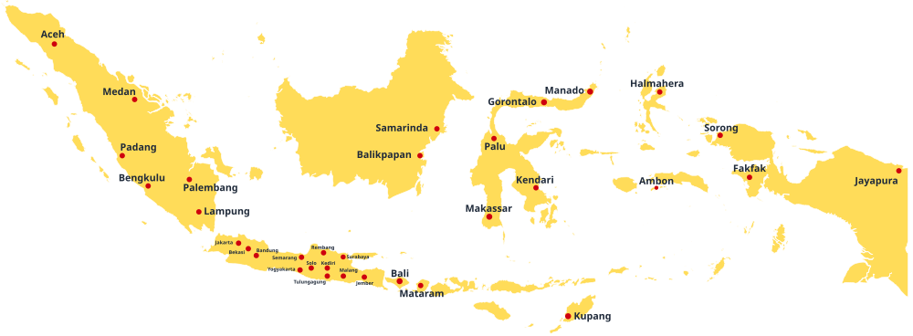

Our Clients
Kami telah dipercaya oleh berbagai instansi dan perusahaan untuk mendampingi perjalanan mereka dalam mengembangkan potensi sumber daya manusia dan mengoptimalkan kinerja organisasi secara profesional.


Total Peserta Rekrutmen Tertangani
Psikolog Profesional Terafiliasi
Pembuatan Kontrak Kerja Perusahaan
Alat tes Psikologi ter-update
Perusahaan yang Bekerja sama dalam hal Rekrutmen

Tidak semua kandidat yang memenuhi kualifikasi memiliki karakter dan nilai yang sesuai dengan budaya perusahaan.
Penyaringan kandidat hingga proses wawancara sering menyita waktu dan mengurangi fokus pada prioritas bisnis.
Keputusan rekrutmen yang kurang tepat dapat berdampak pada produktivitas tim, biaya operasional, dan kinerja organisasi.
Belum adanya pendampingan intensif di awal 3 bulan pertama karyawan bekerja
Why Choose Us? /
Setiap solusi dirancang berdasarkan pemahaman mendalam terhadap individu, tim, dan dinamika organisasi.
Rekomendasi yang kami berikan didukung oleh asesmen, observasi, dan analisis kebutuhan yang terukur, sehingga solusi yang dihasilkan lebih relevan, tepat sasaran, dan berdampak nyata.
Mulai dari asesmen, konsultasi, pelatihan, hingga pendampingan implementasi, kami hadir sebagai mitra yang mendampingi proses perubahan secara menyeluruh, bukan hanya penyedia pelatihan sesaat.
Setiap program dirancang agar mudah diterapkan dalam konteks nyata organisasi. Fokus kami bukan hanya menambah wawasan, tetapi membantu menciptakan perubahan perilaku dan peningkatan kinerja.
Layanan asesmen psikologi dan uji kompetensi untuk seleksi serta pengembangan karyawan di perusahaan.
Psikotes Terstandar
Menggunakan alat ukur psikologi, reliable dan up-to-date sesuai dengan pengembangan sdm saat ini
Laporan Kompetensi
Laporan hasil pemetaan psikologi dan kompetensi kandidat yang disertai dengan rekomendasi profesional
Seleksi Karyawan
Menerapkan tahapan yang singkat dan objektif, guna menghasilkan rekomendasi karyawan terbaik
Konsultasi Hasil
Pemberian feedback dan konseling bersama para psikolog ahli untuk pengembangan individu di tempat kerja ke depannya
Tes minat dan bakat untuk membantu pemilihan karier yang tepat dan jurusan sekolah yang sesuai.
Tes Minat & Bakat
Skrining kesesuaian minat dan bakat yang sesuai dengan proyeksi karier ke depan
Rekomendasi Jurusan
Pemberian saran dan pengembangan potensi berdasarkan profl yang dihasilkan
Perencanaan Karier
Panduan jalur karier yang terstruktur untuk persiapan dan pengembangan career path ke depan
Konsultasi Psikolog
Sesi bimbingan langsung dan diskusi bersama Psikolog berpengalaman
Program pelatihan soft skill dan bimbingan kesiapan memasuki dunia kerja
Memberikan Pelayanan Prima
Membangun budaya layanan yang berfokus pada kepuasan dan loyalitas pelanggan
Fundamental Marketing
Memahami dasar-dasar pemasaran untuk mendukung pertumbuhan bisnis
Merumuskan Stretegi Penjualan
Mengembangkan strategi penjualan yang tepat untuk mencapai target bisnis
Financial & Credit Analysis
Meningkatkan kemampuan analisis keuangan dan kredit untuk pengambilan keputusan yang lebih akurat
Persiapan TPA untuk seleksi perguruan tinggi, CPNS, dan ujian masuk sekolah kedinasan.
Target CPNS & PTN
Strategi khusus lulus seleksi kedinasan
Simulasi TPA
Latihan soal sesuai standar ujian nasional
Analisis Kemampuan
Peta kekuatan & area yang perlu ditingkatkan
Bimbingan Intensif
Pendampingan penuh menuju kelulusan seleksi
Kami telah dipercaya oleh berbagai instansi dan perusahaan untuk mendampingi perjalanan mereka dalam mengembangkan potensi sumber daya manusia dan mengoptimalkan kinerja organisasi secara profesional.